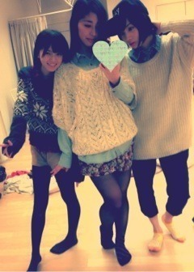

| 2013/02 03 Sun | 豆を蒔いた(´>∀<｀)ゝ |
ちはるーむへようこそ(｡･ω･)ﾉﾞ♡
今日は節分！
鬼はー外っ
福はー内っ
とゆうことで秋田名物。なまはげと写真撮りましたです(｢･ω･)｢
初なまはげ！！！！
周りでぎゃんぐるぎゃんぐる泣いちゃってるお子さんもいたけど
俺っちは嬉しくてなんか満面の笑みで笑ってて
いつのまにか顔だけが前に出てしまっていたよ(｢･ω･)｢
くびなしみたい(´Д` )かおなしか？(´Д` )
とゆうことで今年も鬼に取り付かれず
福がたくさん入ってきますように。
今年もいい年になりますように。
♡（^人^）♡
あ！ちなみに斎藤家では豆まきが恒例行事なのよー
蒔いた豆はさくらが食べちゃうから
蒔くまえにみんなで歳の数づつ食べるよ(･ω･)/わふ
なんか毎年恵方巻きは食べてないのよねーなんでかしらー
みなさん家はちゃんと恵方巻き食べてる？
あすみさちー

今日は早朝出発で
これでもか！！！
っていうくらい虚ろな目でみんなとわちゃわちゃしてたよ
早朝のお仕事だったからね(´･ω･`)！
ちょっとしか寝てなかったくせになんか今日は目覚めがやけにいいなあ、
と思って考えてたら
いつもと違う目覚ましの音だった！
その名もone directionさんの「KISS YOU」だった！！
とゆことでいまは絶賛洋楽にハマってます(･ω･)/
one directionさんを筆頭に、
BRUNO MARSさん、
テイラースウィフトさんをリピートしまくり！
このまんま英語ぺらっぺらになってしまうんでないかわたし...
っていうくらい凄まじく聴いてますよ♡
だからって握手会で英語喋って！
っていう無茶振りはやめてよね(´Д` )！
ちなみに1D、そしてブルーノマーズさんはどっちもアルバム買っちゃいました

あ！聴きたいんなら貸すよ！ほれ！
あ。脱線したけど今日のお仕事の仕上がりも楽しみにしててね(•ө•)ぴよ
なんか踊り出したくなるよ！(•ө•)ぴよぴよ
今日は朝早かったからめちゃんこ眠いですー( ；∀；)
だからもうそろそろ！ぐっどないと！
おやすみなさーい( ^ω^ )
明日からまた学校、お仕事、勉強に忙しいけども頑張ろうっっぅ！！！
おまけ。

ちーむＮ揃って打ち合わせなしで
シャツ×ニットという格好になってしまいましたとさ。ちゃんちゃん。
ばいるんっ
るんるんっ
ちはるんっ
(´>∀<｀)ゝ
コメント(108)
2013/02/03 22:42